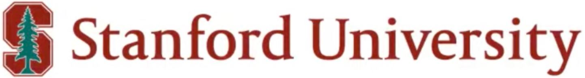

GP-VLS:
A general-purpose vision language model for surgery


Surgery requires comprehensive medical knowledge, visual assessment skills, and procedural expertise. While recent surgical AI models have focused on solving task-specific problems, there is a need for general-purpose systems that can understand surgical scenes and interact through natural language. This paper introduces GP-VLS, a general-purpose vision language model for surgery that integrates medical and surgical knowledge with visual scene understanding. For comprehensively evaluating general-purpose surgical models, we propose SurgiQual, which evaluates across medical and surgical knowledge benchmarks as well as surgical vision-language questions. To train GP-VLS, we develop six new datasets spanning medical knowledge, surgical textbooks, and vision-language pairs for tasks like phase recognition and tool identification. We show that GP-VLS significantly outperforms existing open- and closed-source models on surgical vision-language tasks, with 8-21\% improvements in accuracy across SurgiQual benchmarks. GP-VLS also demonstrates strong performance on medical and surgical knowledge tests compared to open-source alternatives. Overall, GP-VLS provides an open-source foundation for developing AI assistants to support surgeons across a wide range of tasks and scenarios.
In this work, we introduce a vision-language model (VLM) for surgery trained on a wide variety of data. Typical VLMs in surgery focus on task-specific objectives, such as classification. Our general-purpose surgical VLM is able to perform many different language and vision-language conditioned tasks. We consider training on text-only medical and surgical language data, as well as vision-language data for surgical scene understanding.
Current measures of quality for surgical VLMs typically report accuracy on a single classification task (e.g. selecting the phase from five options given an image), where existing language models are taken and adapted with classification heads. One challenge that the field currently faces as a result of this is that there are also no existing measures of quality for general-purpose surgical VLMs. Toward this, we present a new benchmark, SurgiQual, which evaluates VLMs across a panel of different medical and surgical tasks.
In order to train a generalist surgical VLM, we introduce datasets across three categories: (1) medical knowledge, (2) surgical knowledge, and (3) surgical vision-language. We first aim to build a foundation of medical knowledge. Toward this, we use four instruction fine-tuning datasets: MedMCQA, MedQA, Medical Flashcards, and MedInstruct52k. We also propose two surgical QA datasets: SurgTextBook-QA and MedMCQA-Surgery. Finally, we propose five novel training sets for understanding surgical scenes based on four surgical datasets. These training sets cover a variety of tasks that are useful for surgery, including recognizing surgical action, phase, triplet tool-action pairs, and tool location. These also include a training set which asks advanced surgical scene questions.
For the text-based benchmarks, MedQA and MedMCQASurgery, GPT-4 is the highest performing model on MedQA in the literature. This is also reflected in our results, with GPT-4 obtaining an accuracy of 86.1% and GPT-4o with 80.5%. Our model, GP-VLS, obtains the second highest performance on both datasets at 46.1% (on MedQA) and 52.8% (on MedMCQA-Surgery). The lowest performing models are the four open-source models in the following order for MedQA and MedMCQA-Surgery respectively: prism-clip+7b (32.3% and 33.1%), dinosiglip+7b (34.2% and 36.0%), prismclip+13b (34.6% and 37.9%), and dinosiglip+13b (34.3% and 36.3%). For the surgical vision-language benchmarks, GP-VLS clearly outperforms open- and closed-source models for each category. GP-VLS obtains the following percentage improvements over the best model for each category: phase recognition (+8.2%), triplet recognition (+20.7%), tool recognition (+14.5%), and action recognition (+16.9%). For phase and tool recognition, GPT-4 Omni and GPT-4 were the highest performing models whereas for triplet and action recognition, dinosiglip+7b and prism-clip+7b were the highest performing respectively. Overall, there was not a clear pattern between which models were performing the best on each task outside of GP-VLS having the highest accuracy
 We also note that other surgical models obtain zero percent accuracy on these benchmarks due to having architectures
which only output classification labels instead of text, or having a rigidly defined set of possible text outputs (see the model table).
We were unable to test these models due to the model weights
not being open-sourced, limiting reproducibility.
We also note that other surgical models obtain zero percent accuracy on these benchmarks due to having architectures
which only output classification labels instead of text, or having a rigidly defined set of possible text outputs (see the model table).
We were unable to test these models due to the model weights
not being open-sourced, limiting reproducibility.
@inproceedings{schmidgall2024gpvls,
author = {Samuel Schmidgall and Joseph Cho and Cyril Zakka and William Hiesinger},
title = {GP-VLS: A general-purpose vision language model for surgery},
year = {2024},
}